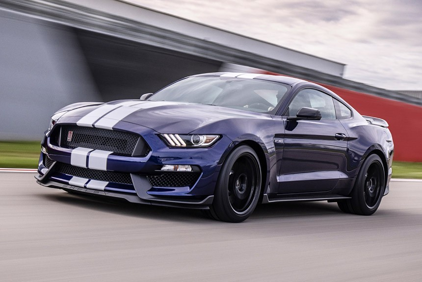
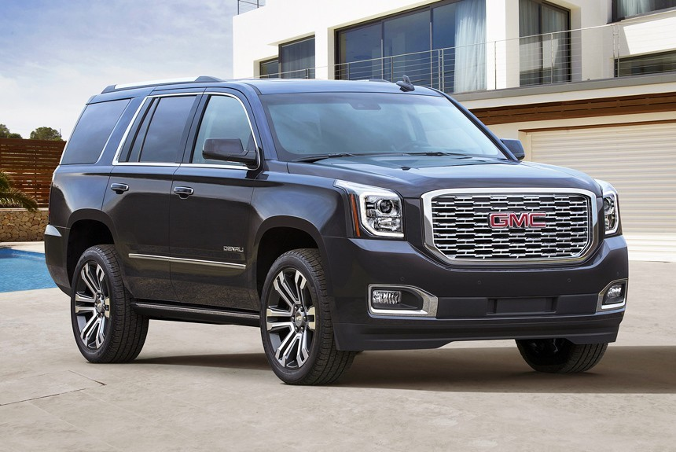

| "Грязными" считаются те автомобили, которые вредят окружающей среде сжигая топливо и выбрасивая углекислый газ в атмосферу. Они считаются самыми дешёвыми в покупке и обслуживании, но редко в эксплуатации.К таким автомобилям относятся машины, использующие для передвижения истощаемые ресурсы или выбрасывающие вещества, наносящие вред природе | |
| Одни из таких бензиновые автомобили. Они сжигают бензин и масло, выделяя при этом углекислый газ. |
 Пример авто с бензиновым двигателем |
| Не менее вредными для экологии являются дизельные автомобили. Обычно это большие внедорожники с таким же большим расходом дизельного топлива |
 Пример авто с дизельным двигателем |